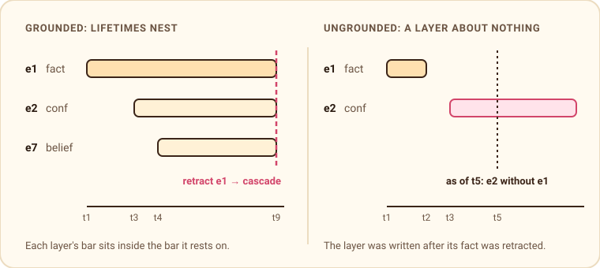

Memory that stays grounded
Tiramemsu stores facts with their own ids, so a fact can carry a confidence, a source or a belief about it, layer on layer. Every statement also has two clocks: when the database knew it, and when it was true in the world. Nothing is ever deleted.
Each of these ideas is old and well studied: reification and RDF-star for the first, temporal databases for the second, Datomic for the third. What happens when all three meet in one statement is less well charted. Corrections have to carry annotations along. A snapshot of the past can contain a confidence score whose fact is missing. A container can be retracted while its contents stay. We wrote a paper that gives this combination a precise meaning and proves what the operations guarantee. This article is the version without the proofs.
One question: is what I see grounded?
Call a set of statements grounded when every statement in it can find the statements it points at. A confidence on e1 is grounded if e1 is there too. A belief that cites e1 is grounded if e1 is there. An ungrounded view is what an agent should never be shown: an annotation about nothing.
The whole paper turns on one operator. The ground core of any set of statements, written γ(X), keeps exactly the statements whose whole support is inside the set: the statement itself, what it points at, what that points at, and so on. It is the largest grounded part of X. Mathematically it is the interior operator of a topology, which sounds grand but buys something practical: γ is idempotent, monotone and distributes over intersection, so you can apply it to any view, in any order, and it never surprises you.
Retraction takes exactly what it must
When you retract a fact, tiramemsu retracts everything that rests on it: its layers, the beliefs that cite it, the layers on those. The paper proves this cascade is not a design whim. The facts left after retracting e are exactly γ(memory without e). Any retraction that keeps memory grounded must take at least the cascade, and the cascade takes nothing more. A truth maintenance system makes a similar promise. Here it holds without forgetting anything, because a retraction only closes a lifetime.
You can see the set before committing to it, on any view, without taking the writer lock:
let at_risk = db.now().dependents(e1)?; // what a retraction of e1 would take
let then = db.as_of(TimeRef::Tx(150)).dependents(e1)?; // what depended on it back thenA property test checks that this read, a dry-run retraction and the reverse path query (^sys:subject|^sys:object)* always return the same set.
The past is grounded when lifetimes nest

Two results make time travel safe. First, an as_of(t) view never changes once transaction t has committed, and it equals a replay of the event log up to t. An answer about the past is reproducible forever. Second, every as-of view is grounded if and only if lifetimes nest along layers, as in the left half of the figure. The engine gets nesting for free if a write may only point at statements that are live at that moment. The paper calls this the live-reference discipline.
There is one deliberate exception. When a fact is corrected, the new version points back at the old one with sys:supersedes. That link points into the past on purpose. The paper calls such predicates lineage and exempts them.
Valid time is a claim, so the reader decides
Valid time is different. A confidence assessed in 2026 about a job someone held in 2020 is valid in 2026. Tiramemsu does not clamp a layer's interval to its fact's, and that is on purpose. The consequence is that a validAt slice can contain a layer whose fact was not valid at that instant.
The paper gives the reader a cheap fix. A statement's effective validity is the intersection of the valid intervals of everything in its support. The largest grounded valid-time slice is exactly the set of statements whose effective validity contains the instant. Intersecting intervals gives an interval, so the effective validity can be computed during the traversal that reads the layers anyway. The two clocks end up asymmetric. The engine keeps transaction time grounded, because it controls that clock. Valid time is the writer's claim about the world, and it is grounded only when the reader asks.
A correction is an isomorphism
supersede fixes a fact while keeping what was said about it. It retracts the fact's cascade set and replays it under new ids. The paper proves the replay is a structure-preserving copy: every layer, citation and edge's contents lands on the corrected fact exactly as it stood on the old one. Meanwhile the old structure stays visible as of the transaction before. After n corrections, the edit history is a path of length n over sys:supersedes.
Metagraphs get two clocks for free
A metagraph has edges that are vertices and vertices, or edges, that hold subgraphs. In tiramemsu the first comes from statement ids. The second comes from membership statements (e sys:inGraph g), where the graph name g may itself be a statement. The paper turns this into an encoding: every vertex, edge, membership and annotation of a metagraph becomes one statement, and every dependency becomes a reference.
The headline result is the Bitemporal Lifting Theorem. A temporal metagraph is well-formed when no part outlives, on either clock, the things it mentions. For such a metagraph, taking a snapshot and encoding commute. Snapshot then encode gives the same result as encode then snapshot. So a metagraph needs no temporal theory of its own. These all act on metagraphs through the encoding:
- as-of views and valid-time slices
- history
- cascades and corrections
- time-respecting paths
Some consequences you can rely on:
- Unfold in time: the members of a container as of any transaction are a
GRAPHquery in that view. - Containers retract, contents stay: retracting an edge that holds a subgraph retracts its memberships and annotations, never the facts inside.
- Fold is a write of tags: folding changes no earlier view, and unfolding afterwards returns what was folded.
- Linear size: the encoding costs one statement per vertex, edge, endpoint, membership and annotation, and a binary edge is just one statement.
What the theory found in the code
Writing down the hypotheses made it possible to check the engine against them. It does not yet meet them in three places, each confirmed by a test on 3 October 2026:
- Layers on retracted facts.
assertaccepts a statement that is no longer live as subject or object, so the current view can hold an annotation about nothing.confirmandadd_to_graphalready check liveness. - Forward references. An id that was never allocated is accepted as a subject. This is the only way, outside a correction, to build a reference cycle.
- A layer on a dropped membership. A correction drops the fact's memberships in outside graphs. A layer on such a membership, such as who added the fact to a session, is still replayed, and its copy points at an id that was never written.
The fixes come from the same operator. A correction should replay γ of what it keeps, so the layers of a dropped membership are dropped with it. User writes should follow the live-reference discipline, with predicates that point into the past declared as lineage. Annotating a fact after it was retracted, to record why it was wrong, is a legitimate thing to do. Declaring it makes the intent explicit. Until the fixes land, γ(view) is always a grounded reading.
Read the paper
The paper, Layered Bitemporal Graphs: Statement Identity, Two Clocks, and Metagraphs as Tags, has the definitions, every theorem with its proof, and a related-work section. It covers bitemporal databases, temporal graphs, statement-level identity, metagraphs, truth maintenance and agent memory. It is a draft preprint under CC BY 4.0.